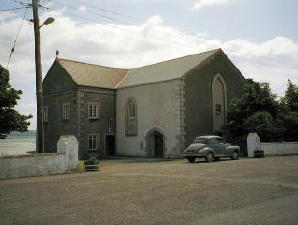
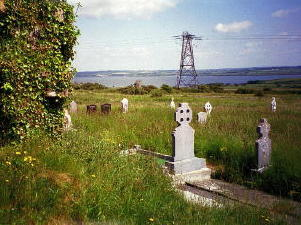

Dan Furey's House - Labasheeda

Dan Furey, Dolores Streff, Vera Nugent |
Aunt Vera Nugent, niece Dolores Streff | Irish President Mary Robinson |
|
Note the thick walls |
His front drive | His back yard with a view of the Shannon |
|  Community Centre (Old St. Kieren's Church) |
St. Kieren's Church |
 |
|  |
 |
Thatched Roof |
Along the West Coast |
Peat Bog |